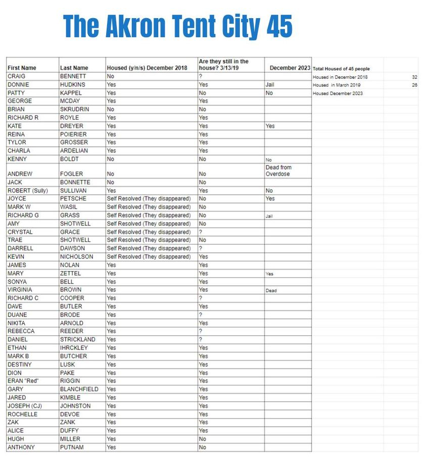

Timeline photos
5 years ago, this December, the City of Akron and the entire Continuum of Care made this herculean effort to house 45 people at the Akron's Tent City.
I will never forget the day that the CEO of the Battered Women's Shelter at the time, Terri Heckman, told me that she could house every single one of these people IN A WEEK if I'd only let her. As if I was hoarding homeless people in my backyard.
Deadlines got pushed back. Massive meetings were held every week FOR MONTHS.
In the end, 32 of the 45 got housed. There was a contention that my number was too low. But the Continuum of Care counted a group they called "Self-Resolved" as housed. So that added an additional 8 people to their list. In reality, those people just walked off into the streets and woods.
I believe these 45 people are incredibly important to the history of homelessness in Akron Ohio. This was an all-hands-on-deck effort that the mayor, Dan Horrigan, was directly involved with.
There was free housing given. There was low income housing given.
At the end there were these super contentious meetings with the Continuum of Care where everyone was bearing down on Fred Berry from Humility of Mary Housing to get more housing for the most extreme people they couldn't house. It was like they started blaming Fred for being the hold up. He was scrambling as hard as he could to get housing.
It was such a strange and surreal experience.
This list has never been made public before. These are the 45 people at our tent city that the city of Akron so desperately tried to house.
Like I said, I believe these people are a very important part of our city's history. But if someone does not want their name on this list please let me know and I'll remove it.
What I want to do now is see if we can find out who on this list is currently housed or what their position is. I've started the list from what I know for certain.
But I really need your help. Please let me know if you can tell me the housing status of any people you know.